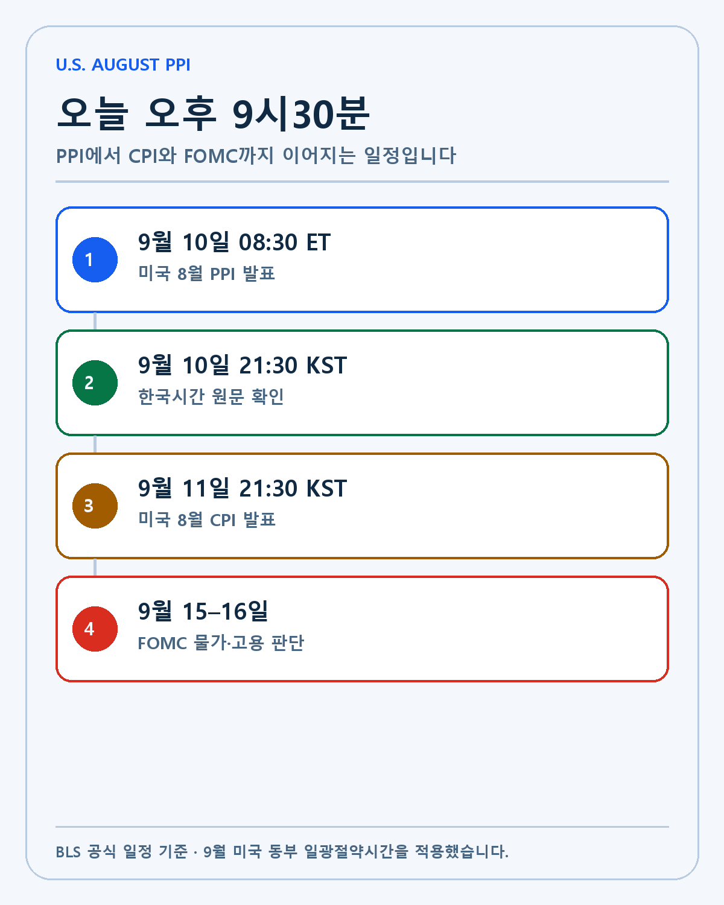
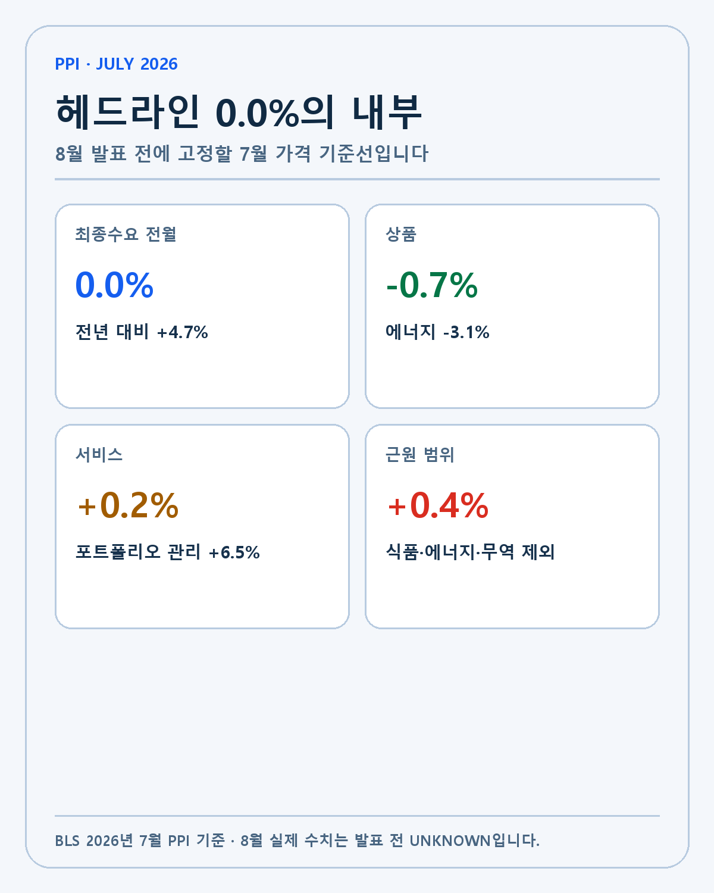
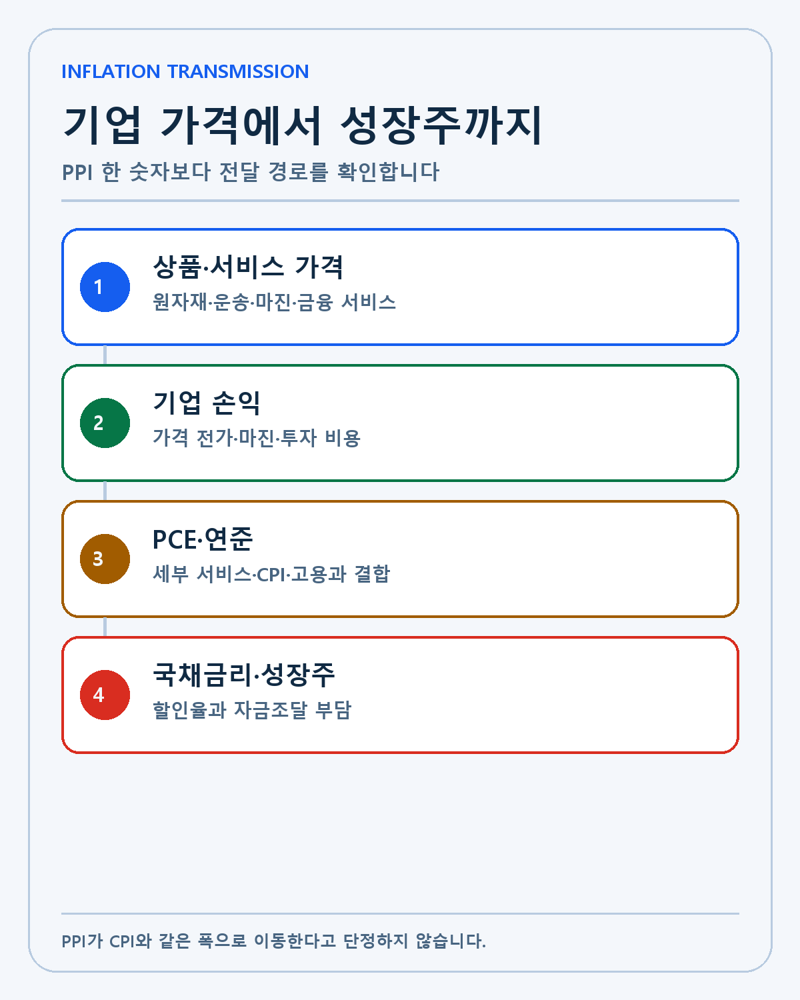
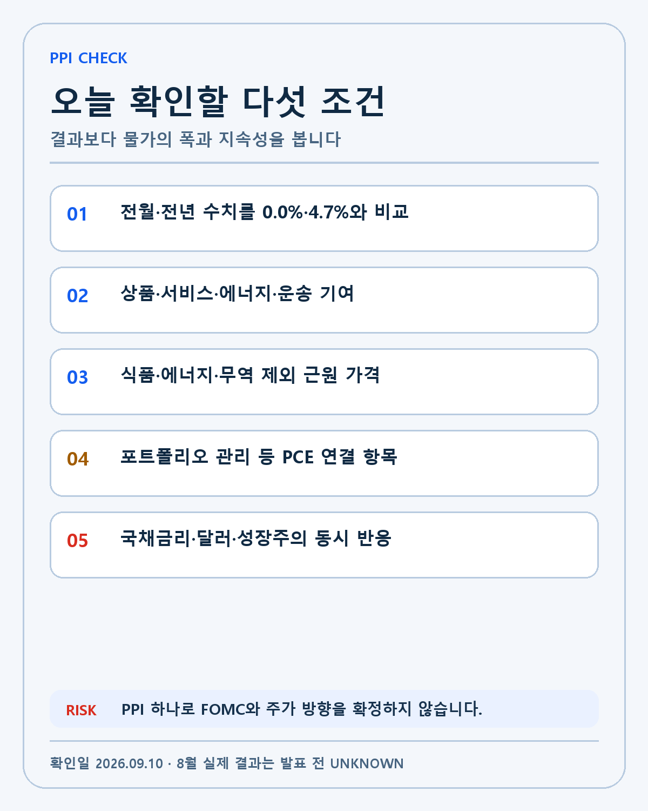

U.S. PPI · DEEP RESEARCH
미국 8월 PPI 프리뷰: 4.7% 생산자물가에서 금리와 성장주를 읽는 방법
한국시간 9월 10일 오후 9시30분 미국 PPI를 7월 4.7% 기준선, 상품·서비스·PCE 연결과 성장주 할인율로 분석합니다.
미국의 2026년 8월 생산자물가지수(PPI)가 오늘 밤 발표됩니다. 미국 동부시간 9월 10일 오전 8시30분, 한국시간으로는 9월 10일 목요일 오후 9시30분입니다. 미국 노동통계국의 공식 일정에서 확인되는 시각입니다. 8월 실제 수치는 아직 공개되지 않았습니다.
PPI는 기업이 상품과 서비스를 팔 때 받는 가격의 변화를 측정합니다. 소비자가 지불하는 가격을 보는 CPI보다 공급망 앞단에 가깝습니다. 원자재와 운송, 도매 마진, 서비스 비용이 기업의 원가와 판매가격에 어떻게 번지는지 확인할 수 있습니다.
이번 발표가 중요한 이유는 7월의 표면과 내부가 달랐기 때문입니다. 전체 PPI는 전월 대비 변동이 없었지만 전년 대비로는 4.7% 올랐습니다. 상품 가격은 내려갔고 서비스 가격은 올랐습니다. 헤드라인 하나만 보면 물가가 잠잠해진 것 같지만, 근원 가격과 PCE에 연결되는 서비스 항목은 여전히 확인할 필요가 있습니다.
발표는 오늘 오후 9시30분입니다
9월 미국 동부는 일광절약시간인 EDT를 적용합니다. EDT는 UTC-4, 한국은 UTC+9이므로 시차는 13시간입니다. 미국 동부시간 오전 8시30분에 13시간을 더하면 한국시간 오후 9시30분입니다.
| 구분 | 미국 동부시간 | 한국시간 | 확인할 내용 |
|---|---|---|---|
| 8월 PPI | 9월 10일 오전 8시30분 | 9월 10일 오후 9시30분 | 최종수요·상품·서비스 |
| 8월 CPI | 9월 11일 오전 8시30분 | 9월 11일 오후 9시30분 | 소비자물가·주거·서비스 |
| 9월 FOMC | 9월 15–16일 | 9월 17일 새벽 결과 | 물가와 고용의 정책 반영 |

PPI가 먼저 나오고 다음 날 CPI가 이어집니다. 한 지표가 예상보다 높거나 낮다고 금리 방향을 바로 확정하지 않겠습니다. PPI의 기업 가격, CPI의 소비자 가격, 최근 고용과 임금이 같은 방향을 가리키는지 봐야 합니다.
7월 기준선은 전월 0.0%, 전년 4.7%입니다
BLS의 7월 PPI 발표에 따르면 최종수요 가격은 전월 대비 변동이 없었습니다. 6월에는 0.1% 내렸고 5월에는 0.5% 올랐습니다. 월간 숫자만 보면 7월은 진정된 모습입니다.
전년 대비 상승률은 4.7%였습니다. 6월의 5.5%보다 낮아졌지만 연준의 물가 목표와 비교하면 기업 가격 압력은 여전히 높은 편입니다. 전월 수치와 전년 수치는 비교 기준이 다릅니다. 0.0%라는 한 달 변화가 4.7%라는 누적 상승을 지우지 않습니다.
7월 상품 가격은 0.7% 내렸고 서비스 가격은 0.2% 올랐습니다. 에너지 가격이 3.1% 하락하면서 상품 전체를 끌어내렸습니다. 반면 서비스는 계속 올랐습니다. 8월에는 상품과 서비스가 다시 같은 방향으로 움직이는지 확인해야 합니다.

헤드라인보다 근원 가격을 봐야 합니다
식품·에너지·무역서비스를 제외한 7월 PPI는 전월 대비 0.4%, 전년 대비 4.7% 올랐습니다. 변동성이 큰 항목을 덜어낸 가격 압력이 헤드라인보다 강했습니다. 전체 지수가 0.0%였다는 이유만으로 기업의 기초적인 비용 압력이 사라졌다고 볼 수 없는 이유입니다.
식품과 에너지는 월별 변동이 큽니다. 무역서비스는 도매와 소매 마진을 측정하기 때문에 특정 달의 구성 변화에 영향을 받을 수 있습니다. 이 세 항목을 뺀 수치는 물가의 지속성을 보는 보조 지표입니다. 그렇다고 이것만 진짜 물가라고 부를 수는 없습니다. 실제 기업과 소비자는 식품과 에너지 비용도 지불합니다.
8월 발표에서는 헤드라인, 식품·에너지 제외, 식품·에너지·무역서비스 제외를 함께 적겠습니다. 세 숫자의 방향이 같다면 신호가 선명해집니다. 서로 엇갈리면 어떤 구성 항목이 차이를 만들었는지 확인하겠습니다.
PPI에서 PCE로 넘어가는 항목이 있습니다
7월 포트폴리오 관리 서비스 가격은 6.5% 올랐습니다. Axios의 7월 PPI 분석은 이 항목이 연준이 선호하는 PCE 물가지수 계산에 연결되는 PPI 구성 요소 중 하나라고 설명했습니다.
PPI 전체가 CPI의 선행지표라고 단순화하면 안 됩니다. 두 지수는 조사 대상과 가중치가 다릅니다. PPI의 일부 의료·금융·항공 서비스가 PCE 계산에 활용되고, CPI의 주거비처럼 별도의 경로를 가진 항목도 있습니다. 그래서 시장은 최종수요 PPI뿐 아니라 포트폴리오 관리, 병원·의료, 항공료 같은 세부 항목을 봅니다.
이번 8월 발표에서 금융 서비스가 다시 크게 움직이면 PCE 전망이 달라질 수 있습니다. 반대로 헤드라인이 높아도 에너지 한 항목이 대부분을 설명하고 근원 서비스가 안정되면 해석은 달라집니다. 숫자의 크기보다 어느 항목이 만들었는지가 중요합니다.

오늘 확인할 다섯 조건입니다
- 최종수요 PPI의 전월·전년 상승률을 7월 0.0%·4.7%와 비교합니다.
- 상품과 서비스가 같은 방향인지, 에너지와 운송이 얼마나 기여했는지 봅니다.
- 식품·에너지·무역서비스 제외 수치가 7월 0.4%보다 낮아지는지 확인합니다.
- 포트폴리오 관리·의료·항공 등 PCE 연결 서비스 항목을 따로 기록합니다.
- 국채금리와 성장주가 움직여도 PPI 때문인지 CPI 대기·고용·유가를 함께 확인합니다.

강세 시나리오는 헤드라인과 근원 수치가 함께 둔화하고 서비스 가격도 안정되는 경우입니다. 국채금리의 상승 압력이 낮아지면 미래 현금흐름의 할인율에 민감한 성장주에는 우호적일 수 있습니다. 그래도 다음 날 CPI가 반대 신호를 보내면 해석은 바뀝니다.
기준 시나리오는 상품과 에너지가 전체 수치를 흔들지만 근원 서비스는 완만하게 유지되는 경우입니다. 이때 시장은 PPI보다 CPI와 FOMC 설명을 기다릴 가능성이 큽니다. 저는 장중 가격 반응보다 두 물가지표의 구성과 금리 경로를 먼저 보겠습니다.
약세 시나리오는 상품과 서비스, 근원 수치가 동시에 다시 빨라지는 경우입니다. 기업 원가와 판매가격 압력이 넓게 퍼진다면 국채금리와 고평가 성장주의 부담이 커질 수 있습니다. 다만 하루의 PPI만으로 장기 인플레이션 추세나 금리 인상을 확정하지 않겠습니다.
제 포트폴리오에는 할인율 경로로 연결됩니다
엔비디아와 팔란티어, 아이온큐, 로켓랩처럼 미래 성장 기대가 큰 기업은 먼 시점의 현금흐름을 현재 가치로 평가받습니다. 시장금리가 높아지면 같은 미래 이익의 현재 가치는 낮아집니다. PPI가 기술력을 바꾸는 것은 아니지만 주가가 그 기술에 매기는 가격에는 영향을 줄 수 있습니다.
반도체와 데이터센터 기업에는 비용 경로도 있습니다. 에너지와 운송, 장비와 건설 가격이 오르면 데이터센터 증설 비용이 늘 수 있습니다. 기업이 높은 비용을 고객에게 전가할 수 있는지, 수요가 충분한지에 따라 마진 영향은 달라집니다.
저의 장기 보유 기준은 기술 경쟁력과 해자, 경영진, 성장률, 현금흐름입니다. PPI가 한 번 높게 나왔다고 좋은 기업을 바로 팔지는 않습니다. 대신 금리가 높게 유지될 때도 투자와 현금창출을 감당할 수 있는지 확인합니다. 같은 성장률이라도 현금이 필요한 기업과 이미 큰 현금흐름을 만드는 기업의 부담은 다릅니다.
발표 뒤에는 결과보다 차이를 기록합니다
첫 기록은 실제 수치와 7월 기준선의 차이입니다. 둘째는 상품·서비스·근원 가격의 기여입니다. 셋째는 PCE에 연결되는 세부 서비스입니다. 넷째는 국채금리와 달러, 나스닥의 동시 움직임입니다. 마지막으로 다음 날 CPI가 같은 방향을 확인하는지 봅니다.
시장 예상치는 여러 기관에서 다를 수 있습니다. 저는 특정 예상치 하나를 정답으로 두지 않고 실제 수치와 구성, BLS의 수정치를 우선하겠습니다. 발표 직후 헤드라인 기사보다 원문 표를 먼저 읽겠습니다.
8월 PPI의 실제 값은 지금 알 수 없습니다. 오늘 글은 결과 예측이 아니라 발표 뒤 무엇을 확인할지 고정한 기록입니다. 높은 숫자와 낮은 숫자 모두 이유를 확인한 뒤 투자 판단에 연결하겠습니다.
PPI와 CPI가 엇갈릴 때 읽는 순서입니다
PPI는 생산자가 받는 가격이고 CPI는 소비자가 지불하는 가격입니다. 생산비가 올라도 기업이 마진을 줄여 가격 전가를 늦추면 PPI와 CPI가 즉시 같은 방향으로 움직이지 않습니다. 반대로 임금과 주거비처럼 소비 서비스의 비중이 큰 항목은 PPI보다 CPI에서 더 강하게 나타날 수 있습니다.
두 지표가 엇갈리면 전달 경로를 나눕니다. 상품 PPI 상승이 수입가격과 재고, 기업 마진을 거쳐 소비자 가격으로 이동하는지 봅니다. 서비스 물가는 임금과 수요, 금융·의료·운송 가격을 따로 확인합니다. 한 달 차이만으로 선행과 후행을 단정하지 않습니다.
연준의 판단은 물가 하나로 끝나지 않습니다. 고용이 강하고 물가가 높으면 긴축 필요성이 커질 수 있습니다. 고용이 약한데 물가가 높으면 정책의 선택이 어려워집니다. PPI 발표 뒤에도 CPI, 실업률, 임금과 기대인플레이션을 함께 봐야 합니다.
금리가 성장주 가치에 전달되는 과정입니다
국채금리는 기업의 미래 현금흐름을 현재 가치로 바꿀 때 사용하는 할인율의 기준 역할을 합니다. 먼 미래의 이익 비중이 큰 기업은 할인율 변화에 더 민감합니다. 당장 큰 현금을 만드는 기업과 아직 투자 단계인 기업이 같은 금리 충격을 받지 않는 이유입니다.
PPI가 높게 나왔다고 모든 성장주가 같은 폭으로 내려야 하는 것은 아닙니다. 실적 가시성, 현금 보유, 부채와 자금조달 필요가 다릅니다. 가격 반응을 기업 펀더멘털 변화로 착각하지 않으려면 금리 경로와 회사 실적을 분리해 기록해야 합니다.
AI 인프라 기업은 두 방향의 영향을 받습니다. 금리 상승은 밸류에이션에 부담이지만 강한 기업 수요와 가격 결정력은 매출과 마진을 지킬 수 있습니다. 전력·장비·건설 가격이 오를 때 고객이 투자를 늦추는지도 확인해야 합니다.
발표 뒤 기록용 비교표입니다
| 항목 | 7월 기준 | 8월 실제 | 해석 질문 |
|---|---|---|---|
| 최종수요 전월 | 0.0% | 발표 뒤 기록 | 월간 가격 압력이 재가속했는가 |
| 최종수요 전년 | 4.7% | 발표 뒤 기록 | 누적 상승률이 낮아졌는가 |
| 상품 | -0.7% | 발표 뒤 기록 | 에너지·식품이 방향을 바꿨는가 |
| 서비스 | +0.2% | 발표 뒤 기록 | 지속성이 높은 서비스가 빨라졌는가 |
| 식품·에너지·무역 제외 | +0.4% | 발표 뒤 기록 | 근원 압력이 헤드라인과 같은가 |
| 포트폴리오 관리 | +6.5% | 발표 뒤 기록 | PCE 연결 서비스가 다시 튀었는가 |
이 표는 예상치 맞히기용이 아닙니다. 발표 전 기준을 고정하고 같은 항목을 발표 뒤 채우기 위한 장치입니다. BLS가 이전 달 수치를 수정하면 수정 전과 후를 구분해 적겠습니다.
잘못된 해석을 피하는 세 가지 경계입니다
첫째, PPI가 올랐다고 소비자물가가 같은 폭으로 오른다고 계산하지 않습니다. 기업의 가격 전가와 마진, 가중치가 다릅니다. 둘째, 에너지 가격 한 달 변화를 장기 근원 추세로 확대하지 않습니다. 셋째, 발표 직후 주가와 금리의 움직임을 PPI 단독 원인으로 확정하지 않습니다.
시장에는 같은 시각 주간 실업수당 청구도 나옵니다. 고용 신호가 예상과 다르면 금리 반응이 PPI와 섞일 수 있습니다. 다음 날 CPI를 기다리는 포지션 조정도 포함됩니다. 원인이 분리되지 않으면 UNKNOWN으로 남기겠습니다.
발표 뒤 기사 제목보다 BLS 표를 먼저 확인합니다. 계절조정과 비조정, 전월과 전년, 헤드라인과 근원을 맞춰 읽습니다. 숫자가 여러 번 수정될 수 있다는 점도 기록합니다.
다음 업데이트 조건입니다
8월 결과가 나오면 실제 수치와 세부 기여도를 업데이트합니다. CPI가 발표되면 상품·서비스·주거비의 방향을 비교합니다. FOMC 뒤에는 정책 결정과 경제전망이 두 물가지표를 어떻게 해석했는지 확인합니다.
장기 투자 판단은 기업 실적으로 돌아옵니다. 금리 반응이 컸던 기업의 매출과 현금흐름이 실제로 바뀌었는지 다음 분기에서 봅니다. 가격이 먼저 움직였다는 이유만으로 기술과 해자에 대한 결론을 바꾸지 않습니다.
4.7%라는 숫자를 그대로 외우지 않겠습니다
전년 대비 4.7%는 2025년 7월과 2026년 7월을 비교한 값입니다. 다음 달에는 비교 대상이 바뀌기 때문에 월간 가격이 크게 오르지 않아도 전년 상승률이 달라질 수 있습니다. 이를 기저효과라고 부릅니다. 그래서 전년 수치만 보고 현재 물가가 다시 빨라졌다고 단정하지 않겠습니다.
전월 수치는 지금의 변화에 더 가깝지만 한 달 변동성이 큽니다. 에너지나 식품, 금융 서비스 한 항목이 전체를 흔들 수 있습니다. 전월과 전년, 최근 3개월의 흐름을 함께 보고 상품과 서비스의 폭이 넓어지는지 확인하겠습니다.
발표 직후에는 수정치도 봅니다. BLS는 늦게 들어온 자료와 오류 수정에 따라 이전 달 수치를 고칠 수 있습니다. 8월 숫자가 예상과 같아도 7월이 수정되면 비교 기준이 달라집니다. 기사 제목의 예상 대비 차이보다 원문 표의 이전 값과 수정 값을 먼저 기록하겠습니다.
제가 확인하려는 것은 물가의 방향과 지속성입니다. 에너지 한 항목이 올린 일시적 상승인지, 근원 상품과 서비스가 넓게 오르는지 구분합니다. 이 차이가 국채금리와 기업 비용, 성장주 할인율을 해석하는 출발점입니다.
발표 뒤 30분은 판단보다 기록에 쓰겠습니다
오후 9시30분에는 헤드라인과 전년 수치를 먼저 적습니다. 바로 매수나 매도 결론을 내리지 않고 BLS 표가 완전히 열릴 때까지 기다립니다. 같은 시각 발표되는 주간 실업수당 청구가 금리와 달러에 미친 영향도 분리합니다.
다음 10분에는 상품·서비스·식품·에너지·무역서비스를 나눕니다. 한 항목이 전체 변화의 대부분을 만들었다면 지속 가능한 흐름인지 확인합니다. 세부 항목을 보지 않은 채 시장 반응에 이유를 붙이지 않겠습니다.
20분 뒤에는 국채 2년물과 10년물, 달러지수와 나스닥의 방향을 함께 봅니다. 지표 발표 직후 첫 움직임이 되돌려질 수 있으므로 한 번의 가격만 원인 증거로 쓰지 않습니다. 거래량과 다음 날 CPI 대기까지 고려합니다.
마지막에는 제 포트폴리오 기업의 펀더멘털이 바뀌었는지 묻습니다. 대부분의 경우 PPI는 할인율과 비용 환경을 바꾸는 외부 변수이지 기업 기술을 하루 만에 약화시키는 사건은 아닙니다. 외부 가격 변화와 회사의 사업 실행을 분리해 기록하겠습니다.
이 글은 개인 투자 기록이며 특정 종목의 매수·매도를 권유하지 않습니다. 경제지표는 수정될 수 있고 시장 가격에는 여러 요인이 동시에 영향을 줍니다. 모든 투자 판단과 책임은 투자자 본인에게 있습니다.
작성 방법
2026년 9월 10일 기준 공식 자료와 공시를 우선하고 실제·회사 전망·시나리오·UNKNOWN을 분리했습니다.
개인 투자 기록이며 특정 종목의 매수·매도를 권유하지 않습니다.